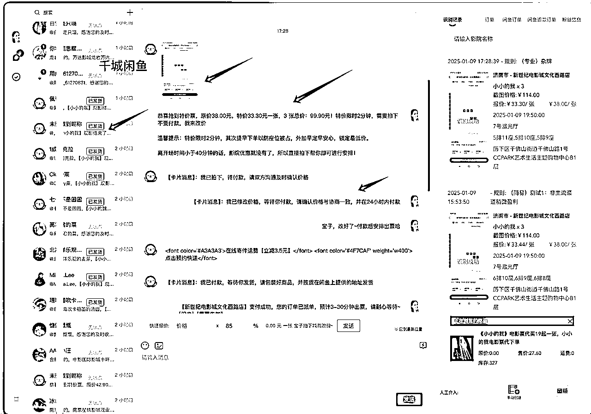

来源：https://el8yuvd870.feishu.cn/docx/I1tudSmwBoCgeBxVg9ccGqVLnah
年底，身边不少人问到有什么好的项目没？
马上过年，似乎不少行业已经进入一个小小的淡季，还有一些已经躺平准备过年。
而电影票似乎却刚刚相反，马上过年各种贺岁大片上映，算是一个不错的机会。而今天就给大家分享一下，我们目前在做的一个项目，闲鱼电影票代下项目。
直接先上一个截图，我们自己操作的一个新号，实操隔天直接爆单，单店日出97单，利润400-500。
接着又带了一些靠谱的朋友进行操作。进行9天直接搞了2000，算是一个比较不错的数据，也刚好赶上了元旦旺季的时刻。当然也再次证明闲鱼电影票这块市场还是足够给力的。
说到闲鱼，一晃眼，竟然也做了8年多了，一直深耕。
操作过实物产品，新号2天3个小时出了400多单，利润1000多；也操作了闲鱼虚拟资料产品，新号隔天直接马上200单，利润将近600块，然后到了目前闲鱼电影票自动化这块。
而闲鱼电影票自动化就是，在原先电影票代下的玩法基础上，又找技术搞了一套工具，对接闲鱼官方API接口，直接将闲鱼电影票实现自动化的一个项目。（后面会说到这部分
先上一个图，在闲鱼平台专营 电影票代购业务，短短 156天，共卖出4.5万件电影票。
简单计算一下，按照每张最低盈利赚3 元的利润，不到半年下来也盈利赚了13.5 万的丰厚利润，这仅仅是保守估计！不少单笔盈利5元，10元及其20更高也有。
接着如下图，相差14天，直接多增加了2.1万单，也就是14天按照单笔3元利润计算，直接半个月不到盈利6万以上。
再来一位圈内老人，做了闲鱼电影票至少3年（账号注册了7年）共卖出9.6万件。按照单笔3元利润28.8万, 单张5元就是将近50万。
可见闲鱼电影票整个市场的足够庞大，而这些用户，后期还可沉淀累计微信，又是一笔不容小觑的可累计生意，不断的复购及其转介绍，可以长期进行。
尤其马上迎来的2025年，贺岁春节档预估电影票房，预估150亿，堪称电影史上极具潜力和看点的年度电影档期。
外加电影票项目长期稳定，电影院不倒闭，就可以一直可以干，及其完了带着一家人 也可以多店搞起。
前面算是对于 电影票市场，及其闲鱼电影票市场的一个铺垫，下来就具体说到这个项目的实操步骤中核心的两大部分，也是本次分享的核心实操部分
一 电影票闲鱼实操快速起爆款的流程
二 电影票低价票源渠道
选品任何时候在电商实操过程中都占据了不容小觑的位置，自然闲鱼电影票这里也不例外。
而闲鱼电影票这里的选品同步就显得更加简单不少，可以直接打开猫眼，淘票票查看近期市场热销的电影就可以清楚的知道。
选好了产品，下来就是一个实操上架部分。
而这部分核心的自然便是 主图，标题，内容，价格，发布地，规格这些，下来逐一进行一个说到。
主图-可以小红书，微博，朋友圈，外加闲鱼上一些好的照片直接可以进行一个使用，不过务必注意高清一些更好。
标题-热映的电影名称+电影票代下之类关键词，当然简单一些的淘宝上的一些 标题就可以直接进行一个借用。
内容-同比比较简单，可以直接参考市场电影票同行的一些内容，无非就是座位截图+城市。（下方会举例
价格-价格这里，标价只是一个虚价，具体的需要截图报价，一般可以9.9 19.9 29.9这样。
发布地-直接优先一线人多的城市 北京，上海，广州，深圳，成都这些。
分类-选择电影票-电子券-2D-平日（含周末
顺便来一个截图演示（如下）
这样我们一个产品就发布完了，一个电影完了就可以选择下一个市场好的电影，当然一些全国电影票如下图，这种也可以进行一个操作来的。
前期我们保持每天发布2-5个产品就成的，尤其每周五周六周天，及其一些节假日，春节，元旦，暑假，五一，过年，外加一些比较不错的新电影上映前一天，及其当天。
当然编辑上架这块，也可以实现一个自动采集和上传，尤其一些人单店流程走顺，准备多店操作。
附上软件连接：https://ruyi.api-z.cn/（前期更建议手动，简单快捷，软件需要搭配安卓手机进行操作）
说完了第一个核心部分，似乎好多人就有点懵了，我这上传了出单了怎么办？
这个时候就需要说到咱们本次分享的第二个核心的部分：
估计也是很多人，一直比较关心的一个点，这会就及时说到。而这部分，也算是实现电影票自动化的一个必要部分。
直接可以实现，用户截图电影票选的场次位置，下来快速筛选出最优票价组合，给用户报特惠额价格，然后顾客下单，自动改价，完了系统进行一个安排出票，出票了自动出票 的流程。
如下图所示，整个过程，软件自动进行一个操作，包含一些常见的客服，也可以直接设置关键词，进行一个回复触发，实现自动化。

而大家关心的低价票源渠道，也在软件里面，有集合对接国内的几大票务平台，将之前找一手票务群对接的麻烦，直接进行了一个节省。
附带上这个软件的注册使用链接：http://rypw.nianchu.vip/ 邀请码：w9dsZkr2WxQ （软件需要用到win系统的电脑操作，并且需要一直开机，可用云服务器代替，软件填写邀请码 有7天免费试用，后期每月59元费用。
外加顺带进行一个说到，如果没有win系统的电脑，想单纯靠手动出票，也可以用户咨询价格的时候，将截图保留下来，多问淘宝，拼多多电影票商家，完了择价格最优优势的，加价给用户也可以来的。（有些时候部分商家前期亏本出售，为了获取信任，然后过年旺季加价盈利回来，所以可能会有所优势。
到这，这篇文章也到了该说结束的时候了，希望对你有所帮助，外加年底还想额外赚钱的你，提供一个不错的思路。